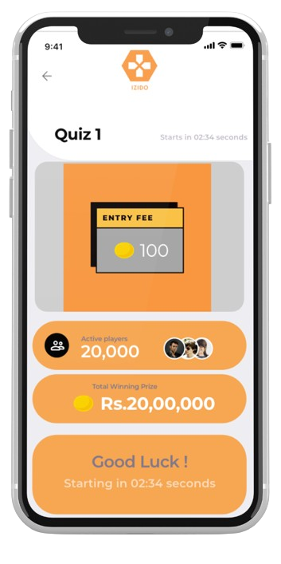

Deductions or penalties on winnings

Blocking of unfairly gained funds
Suspension of izido account
Legal action under applicable law
Izido is committed towards building a safe and secure gaming platform that promotes fair play. We have no incentive to create a platform that promotes unfair gameplay and proud to have one of the most secure online gaming platforms in the world. Take a look at how we make this happen below.
Deductions or penalties on winnings
Blocking of unfairly gained funds
Suspension of izido account
Legal action under applicable law
In order to play on the platform, each user must create a verified profile with a unique phone number and email.
If there is any transaction that involves money, the user MUST be verified through a govt id and Payment methods needs to be only his and not anybody else’s. These are our 3 layer verifications.


The winners of each promotion, tournament and series are highlighted in-app and across izido’s social media channels.
Izido invites professional quiz players to live stream their games and speak about their journey as a quiz player from time to time. Users can learn about the game by watching these livestreams, as well as learn about the challenges faced by professional quiz players in their daily lives.
Unfair Gameplay Practices
Izido is committed towards ensuring that no unfair gameplay practices are occurring in the contest. These include, but are not limited to: